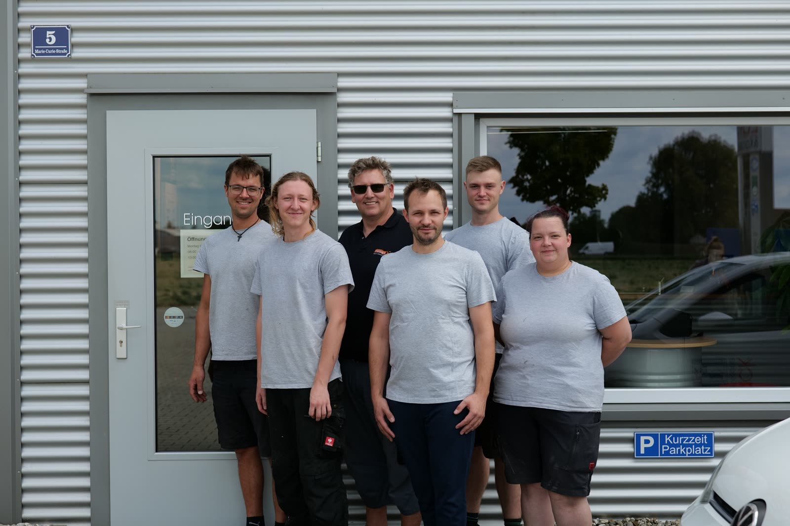
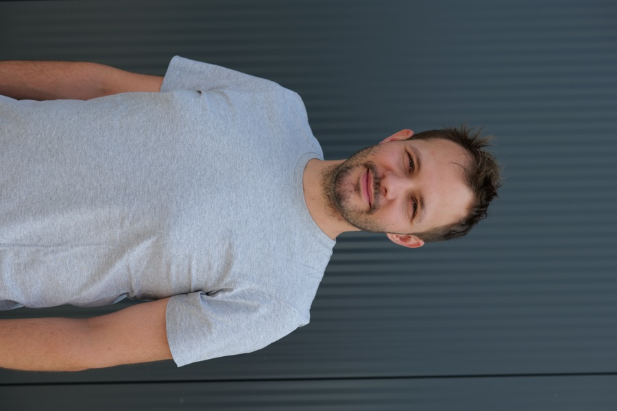
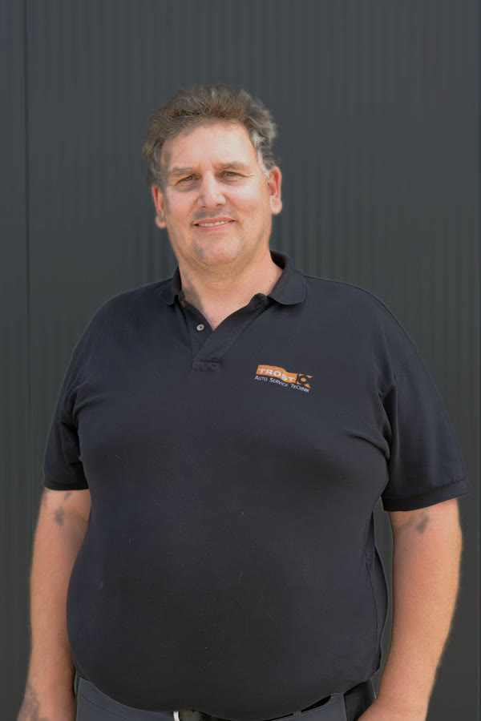
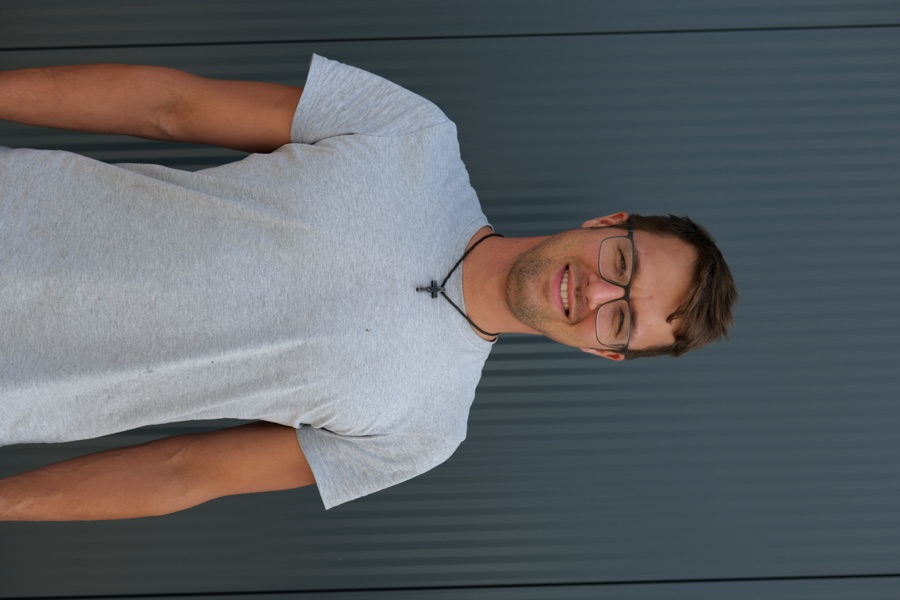
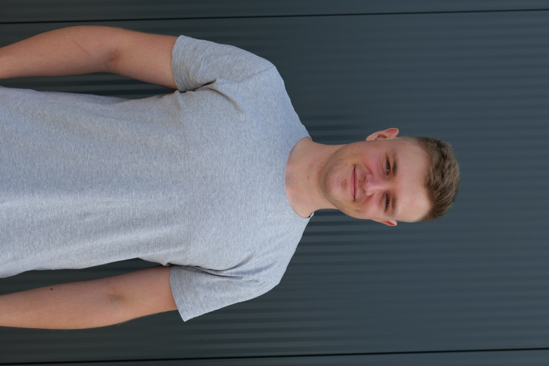
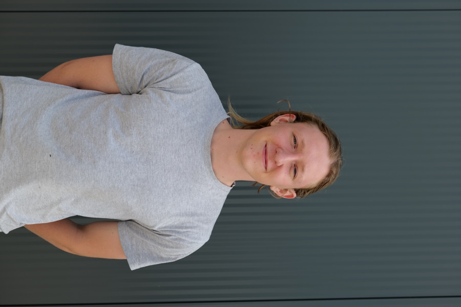
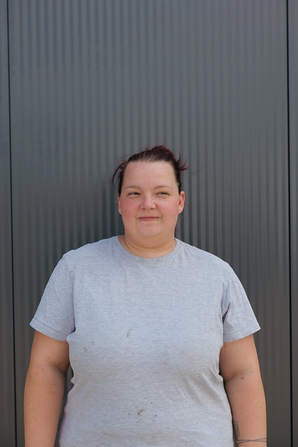

Foto
Jan Benda
Geschäftsführer · Fahrzeuglackieremeister
Willkommen bei Lack & Karosserie Benda in Mühldorf – Ihrem erstklassigen Partner für Fahrzeuglackierung, Unfallinstandsetzung und Industrielackierung.

Seit unserer Gründung im Jahr 2004 haben wir uns einen Ruf als kompetenter und zuverlässiger Ansprechpartner für alle Lackierungs- und Karosseriearbeiten erarbeitet. Unser Team hochqualifizierter Fachleute steht Ihnen mit langjähriger Erfahrung und Fachwissen zur Seite, um Ihr Fahrzeug wieder in Bestform zu bringen.
Start als kompetenter und zuverlässiger Ansprechpartner für alle Lackierungs- und Karosseriearbeiten.
Wir erweitern unser Leistungsspektrum und spezialisieren uns zusätzlich auf die Industrielackierung – individuelle Lösungen für Unternehmen aus verschiedensten Branchen.
Seit 2016 tragen wir das angesehene DEKRA Qualitätssiegel für Karosserie- und Lackierfachbetriebe.
Zertifizierung als eingetragener „Karosserie Fachbetrieb ®" und Mitglied in der renommierten Karosserie- und Fahrzeugbauerinnung.
Ein eingespieltes Team aus Meistern, Fachkräften und Nachwuchs – alle an einem Standort in Mühldorf.






Wir suchen Verstärkung – vom Karosseriebauer über den Lackierer bis zur Ausbildung. Werde Teil von Lack & Karosserie Benda.
Bei Lack & Karosserie Benda in Mühldorf können Sie sich darauf verlassen, dass Ihr Fahrzeug in den besten Händen ist. Wir freuen uns darauf, Sie mit unserem Know-how und unserer Leidenschaft für erstklassige Lackier- und Karosseriearbeiten zu beeindrucken. Zögern Sie nicht, uns zu kontaktieren und einen Termin zu vereinbaren – wir stehen Ihnen gerne zur Verfügung, um Ihnen ein unvergleichliches Kundenerlebnis zu bieten.